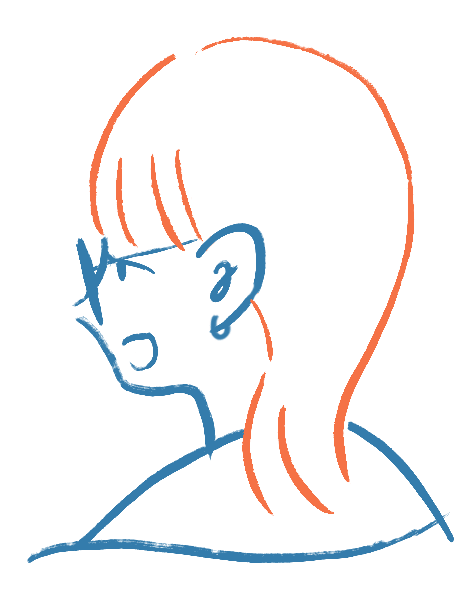

です。
Reina Kobayashi

Name
小林玲衣奈と言います。メンター名はジョニーです。ジョニーの由来はほぼなくて、中高生に気軽に呼んでもらえそうな名前をつけました。
University
名古屋にある金城学院大学の４年生です。次年度からは岐阜にあるIAMAS(情報科学芸術大学院大学)へ進学をします。卒業論文では情報デザインについての研究を行いました。
Leaders
東海12期Webデザイン/デザイナーメンターです。
前回のLfSではiPhoneコースを受けました。
Likes
最近ハマっている食べ物は餃子です。好きなことはステッカーを貼ることとです。最近は自分で作次したロゴみたいなもののステッカーを作っています。